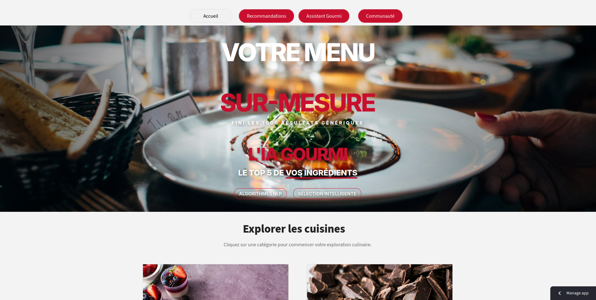
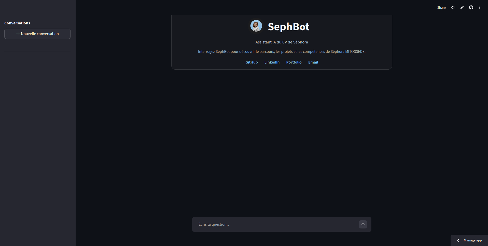

À propos de moi
Data Analyst & Data Scientist spécialisée en analyse statistique et machine learning, je conçois des solutions data pour transformer les données en leviers de décision. Mon profil allie rigueur quantitative, maîtrise des outils data et compréhension des enjeux métiers, avec une intervention sur l’ensemble de la chaîne de valeur, de la préparation des données à la modélisation et à la restitution des résultats.
mitossedes@gmail.com
Rennes, France
Expertises & Solutions Data
1
Statistique et Modélisation
Stack
- Python (Pandas, NumPy, Statsmodels)
- R (tidyverse)
- SQL
Compétences
- Modèles statistiques et économétriques
- Inférence et tests statistiques
- Analyse de résidus et interprétation
2
Machine Learning & modélisation prédictive
Stack
- Python (scikit-learn, XGBoost)
- R (tidymodels)
- TensorFlow, PyTorch
Compétences
- Classification, régression, prévision
- Gestion du déséquilibre des classes
- Évaluation et interprétation des modèles
3
NLP & Intelligence Artificielle
Stack
- Python (spaCy, NLTK, Transformers)
- LLM & embeddings
- APIs IA générative
Compétences
- Analyse de textes et vectorisation
- Analyse de sentiments, classification
- Conception d’assistants intelligents
4
Cloud & Big Data
Stack
- PySpark
- Environnements cloud
- Stockage distribué
Compétences
- Traitement de gros volumes
- Workflows data scalables
- Environnements distribués
5
Visualisation & Data storytelling
Stack
- Power BI & Tableau
- Matplotlib, Seaborn
- R (ggplot2)
Compétences
- Tableaux de bord interactifs
- Data storytelling
- Suivi d’indicateurs clés
6
Soft Skills & Méthodologie
Forces
- Rigueur, autonomie, structure
- Communication technique et métier
- Documentation et versionning
Approche
- Travail analytique reproductible
- Vulgarisation des résultats
- Vision orientée décision
Projets principaux
Une sélection de projets en data analyse, data science et intelligence artificielle appliquée.

Analyse du churn client — Prédiction et aide à la décision
Modélisation du churn, segmentation des clients à risque et restitution via dashboard Power BI.


AgriSave — Détection de maladies des plantes
Application RShiny de diagnostic végétal à partir d’images, basée sur EfficientNetB0.

Pipeline ETL de web scraping à grande échelle
Extraction, transformation et structuration de plus de 42 000 recettes pour des usages analytiques et de recommandation.
Expériences Professionnelles
Parcours en data science, data analyse et statistique appliquée, avec des missions orientées modélisation, qualité des données, automatisation et aide à la décision.
📅 Sept. 2025 – Août 2026
Alternance | Data Scientist
INSEE
Rennes, France
Institut National de la Statistique et des Études Économiques (INSEE)
- Optimisation de la méthode d’imputation des revenus en évaluant plusieurs modèles : Random Forest, Gradient Boosting et MICE.
- Mise en place du modèle d’imputation optimal, permettant une réduction significative de l'erreur de prédiction par rapport à la méthode existante.
- Exploration de données à grande échelle : 12 millions d’individus et plus de 600 variables pour identifier les variables pertinentes.
- Restitution des résultats via dashboards et rapports pour accompagner la prise de décision.
📅 Déc. 2024 – Août 2025
CDD | Data Analyst
EHESP
Rennes, France
École des hautes études en santé publique (EHESP)
- Analyse et exploitation de données en santé publique avec Python, R et Excel pour la production d’indicateurs.
- Automatisation de rapports analytiques et traitement de données d’enquêtes avec R Markdown et Sphinx.
- Préparation, structuration et fiabilisation de bases de données pour des analyses reproductibles.
📅 Mai 2023 – Juil. 2023
Stage | Statisticienne
DSPSSEL
Cotonou, Bénin
DSPSSEL (Ministère de l'Économie)
- Conception et analyse d’enquêtes statistiques sur la mobilité urbaine, contribuant à l’étude des transports collectifs à Cotonou.
- Nettoyage, contrôle de cohérence et imputation de données sous R.
- Production de synthèses statistiques pour appuyer l’interprétation des résultats et l’aide à la décision.
📅 Déc. 2021 – Mars 2022
Stage | Analyste risque crédit
BSIC
Cotonou, Bénin
Banque Sahélo-Saharienne pour l’Investissement et le Commerce (BSIC)
- Analyse de données de crédit pour l’identification des facteurs associés au risque de défaut.
- Étude des déterminants des créances en souffrance afin de mieux caractériser le profil du client solvable.
- Contrôle documentaire et vérification de la conformité des dossiers de crédit dans le cadre des procédures internes.
- Appui aux activités de suivi du risque et de fiabilisation des informations utilisées dans les analyses.
Parcours Académique
Master Mathématiques Appliquées, Statistique (DS & IA)
2024 - PrésentUniversité de Rennes 2 / Rennes, France
Cours : Machine Learning, Deep Learning, Big Data, Séries Temporelles, Optimisation, Programmation R & Python.
Licence 3 Mathématiques et Informatique Appliquées aux SHS
2023 - 2024Université de Bretagne Occidentale (UBO) / Brest, France
Cours : Algèbre, Analyse, Probabilités, Bases de données, Développement Web.
Licence 3 Statistiques parcours Statistiques Économique
2020 - 2021ENEAM / Cotonou, Bénin
Cours : Économétrie, Enquêtes Statistiques, Analyse de données, Logiciels statistiques.
Discute avec mon IA
Posez une question à mon IA
Contactez-moi
Vous avez un poste pour moi ? N'hésitez pas à me contacter !